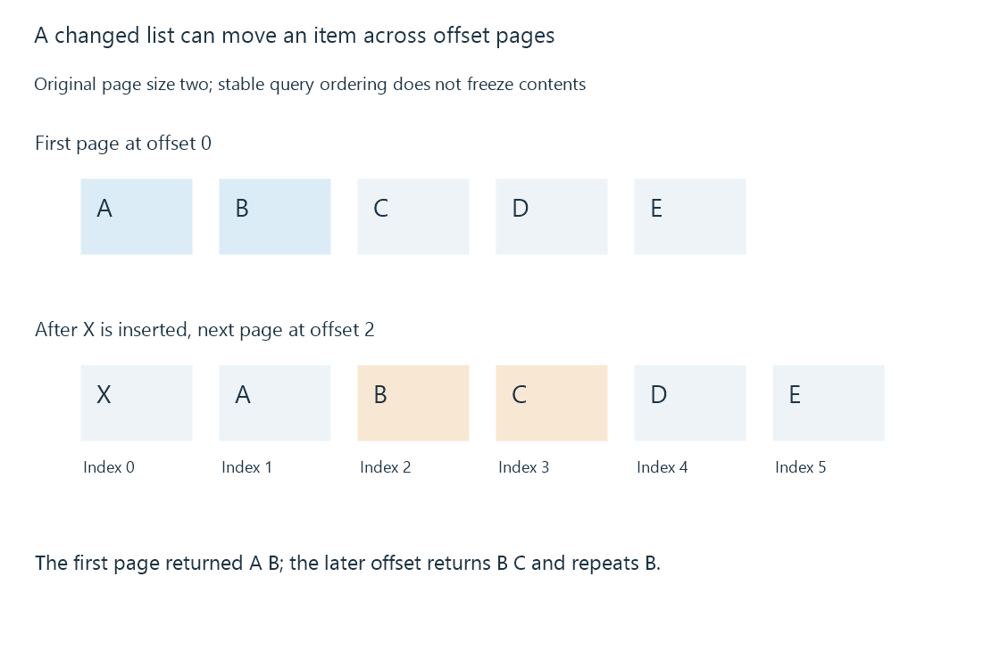

API pagination and changing result sets
Pagination returns bounded portions of a result set, but offsets refer to the list as observed and can shift when its contents change.
Pagination divides a large result into bounded responses. Emby's documented item queries include StartIndex and Limit: an index at which to start and a maximum number of records to return.
This reduces response size, but a page is an observation of a query result—not automatically a permanent numbered partition of the library.
Offsets address the current ordered list
An original five-item result with a page size of two is:
Ordered result: A B C D E
StartIndex 0, Limit 2 -> A B
StartIndex 2, Limit 2 -> C D
StartIndex 4, Limit 2 -> E
The query's filters and ordering must remain meaningful across the traversal. Requesting another page with a different filter is another result set, not the next portion of the first.
An insertion can shift the next page
After retrieving A and B, suppose X is inserted before A. The current order becomes X A B C D E. The request at offset two now returns B C, repeating B.

A deletion before the next offset can instead cause an item to be skipped. Deduplicating IDs can remove repeated entries, but it cannot recover an entry that was never returned.
Stable ordering makes the query interpretable. It does not freeze the underlying data. A server-supported snapshot or suitable cursor mechanism can provide a different traversal contract when available; do not infer that guarantee from StartIndex alone.
Completion also has a contract
| Observation | Interpretation |
|---|---|
| Returned fewer than the maximum | May indicate the current result's end under the endpoint contract |
| Returned no entries | No entries observed for that page |
| A total count is supplied | Count for its defined observation, potentially affected by later changes |
| An earlier ID repeats | The result may have shifted or the query may differ |
| A request fails | That page has not been successfully observed |
A caller should bound its work and handle errors without pretending a failed page is empty. If the purpose is a current inventory, reconciliation can be more appropriate than claiming one mutable offset traversal captured an exact snapshot.
For Emby, use the endpoint's documented fields and permissions. An integration's cached list should identify which query and observation it represents.
See Also
- HTTP API requests and interpretable responses
- JSON payloads, types and field meaning
- Media item identity